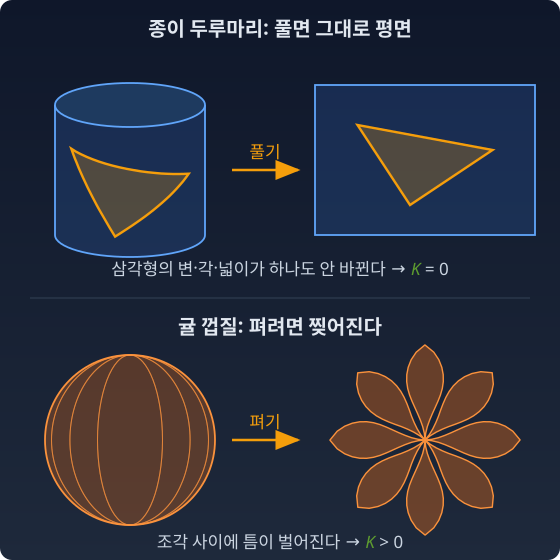
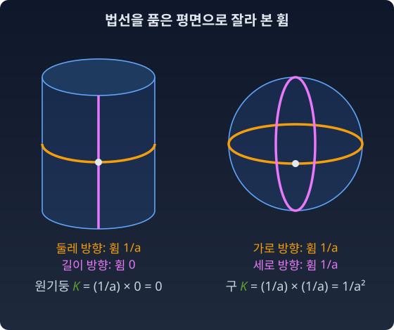

내재적 곡률: 안에서 재는 휨
좌표의 한 칸이 위치마다 다른 거리라는 것, 그것이 곧 공간이 휘었다는 뜻일까?
휘어짐을 재려면 그 바깥에 곧은 무언가가 있어야 하는 것 아닌가? 종이가 휘었는지는 책상 위의 곧은 자에 대 보아야 알고, 땅이 둥근지는 우주에서 내려다보아야 알 것 같다.
곡률을 처음 만나는 사람이 거의 예외 없이 걸려 넘어지는 질문이다. 결론부터 말하면, 바깥 기준은 필요 없다.
종이 두루마리와 귤 껍질 — 바깥의 휨과 안의 휨
종이를 둥글게 말면 우리는 바깥에서 그것이 휘었음을 본다. 이때 기준은 종이를 담고 있는 3차원 공간이다. 이런 휨을 외재적 곡률이라 부른다.
그런데 종이 위에 사는 개미를 생각하자. 개미는 종이 밖을 볼 수 없다. 자와 각도기만 있다. 종이를 말기 전과 후에, 종이 위에 그린 삼각형의 변 길이, 각도, 넓이는 하나도 변하지 않는다. 개미는 자기 세계가 말려 있는지 알아챌 방법이 없다. 원기둥은 외재적으로는 휘었지만 내재적으로는 평평하다.
귤 껍질은 다르다. 귤 껍질을 벗겨 책상 위에 눌러 펴 보면 완전히 평평하게는 안 된다. 어딘가 찢어지거나 겹친다. 지구 표면도 찢거나 늘이지 않고 평평하게 펴는 것은 불가능하고, 지도 제작자들이 여러 도법을 두고 오래 씨름한 까닭이 여기에 있다. 구면 위의 개미는 안에서만 재도 자기 세계가 휘었다는 것을 알아낼 수 있다. 이것이 내재적 곡률이다.

하노버 측량 — 땅 위에서만 재는 사람의 물음
가우스는 1821년부터 1825년까지 하노버 왕국의 삼각측량을 맡았다. 측량하는 사람은 지구 밖으로 나가지 못한다. 땅 위의 여러 지점에서 각도와 거리를 재고, 둥근 땅 위의 삼각형들을 이어 붙일 뿐이다. 그렇다면 땅 위에서 잰 숫자만으로 땅이 얼마나 휘었는지까지 알 수 있을까? 1827년에 가우스가 낸 곡면 연구에는 이런 측량의 쓰임이 큰 동기로 깔려 있었다.
가우스의 놀라운 정리
가우스(1827)는 곡면의 휨을 두 가지 방법으로 계산했다.
하나는 바깥을 쓰는 방법이다. 곡면 위 한 점에서 바깥으로 수직선(법선)을 세우고, 그 법선을 품은 평면들로 곡면을 잘라 단면 곡선들의 휨을 본다. 가장 크게 휜 값과 가장 작게 휜 값을 주곡률이라 하고, 둘을 곱한다.
반지름 a인 원기둥은 둘레 방향으로 1/a만큼 휘었고, 길이 방향으로는 전혀 안 휘었다. 곱하면 K = (1/a) × 0 = 0이다. 반지름 a인 구는 모든 방향으로 1/a만큼 휘었다. K = 1/a².

다른 하나는 안에서만 재는 방법이다. 곡면 위에 자를 대고 잰 계량 g와 그 도함수만 가지고 계산한다. 가우스가 발견한 것은 두 결과가 항상 같다는 사실이었다. 그는 이것을 Theorema Egregium, 놀라운 정리라 불렀다.
가우스 곡률 K는 계량 g와 그 도함수만으로 결정된다. 따라서 곡면을 찢거나 늘이지 않고 구부리는 한, K는 변하지 않는다.
왜 놀라운가. 정의상 바깥을 봐야 하는 양이, 실은 안에서만 재도 결정된다는 뜻이기 때문이다. 바깥 공간은 계산의 편의였을 뿐 곡률의 기준이 아니었다. 종이를 말아도 K = 0은 그대로다. 그래서 원기둥은 펼 수 있다. 귤 껍질은 K > 0이다. 평면은 K = 0이다. 안에서 잰 양이 다르니 찢지 않고는 펼 수 없다. 측량하는 사람의 말로 하면, 땅 위에서 잰 거리와 각도만으로 땅이 휜 정도를 알 수 있다.
한 칸의 크기는 기준이 아니다
이 장의 첫머리로 돌아가자. "좌표 한 칸이 곳마다 다른 거리이면 휘었다"는 생각은 틀렸다. 평면에 극좌표를 붙여 보면 안다.
각도 φ를 한 칸(0.1 라디안) 옮기면, r = 1에서는 0.1만큼, r = 10에서는 1만큼 걷는다. 열 배 차이다. 계량 성분 r²이 위치마다 다르다. 그래도 이것은 그냥 평면이다. K = 0. 한 칸의 크기가 달라진 것은 공간이 아니라 지도(좌표)를 그리는 방식 때문이다.
1차원은 더 극적이다. 구불구불한 곡선 위의 개미에게는 앞뒤로 잰 길이밖에 없다. 어떤 좌표를 붙여도 길이를 따라 다시 매기면 평범한 수직선이 된다. 1차원 매니폴드의 내재적 곡률은 언제나 0이다. 바깥에서 아무리 휘어 보여도.
그러니 "한 걸음이 어디서나 같은 크기인가"라는 질문에 "아니다"라고 답했다고 해서, 그것만으로 파라미터 공간이 휘었다고 말할 수는 없다. 휨을 말하려면 안에서 재는 시험이 필요하다.
점에서는 언제나 평평하다
그러면 무엇이 기준인가. 답은 각 점에서의 평평함이다.
서울 지도를 떠올리자. 지구가 둥글어도, 서울 근처만 그린 지도는 아주 정확하다. 어느 도시를 가운데 두고 지도를 그려도 마찬가지다. 수학으로 말하면, 어느 점 p에서든 좌표를 잘 고르면 이렇게 만들 수 있다.
한 점에서 자를 평면의 자와 똑같이, 그리고 자가 변하는 기울기까지 0으로 만들 수 있다. 물리에서는 이것을 자유낙하하는 엘리베이터 안에서 중력이 사라지는 일로 만난다.
여기서 멈추면 "공간은 언제나 평평하다"가 되어 버린다. 그러나 한 단계 더 가면 막힌다. 자의 2차 미분은 어떤 좌표변환으로도 전부 없앨 수 없다. 지워지지 않는 그 잔여분이 정확히 곡률이다.
곡률의 기준은 바깥 공간이 아니라, 한 점에서의 평평함을 이웃으로 넓히려 할 때 생기는 실패의 양이다. 기준은 밖이 아니라 점에 있다.
한 걸음 더 — 좌표로 지워지지 않는 20개의 수
빛은 휘어진 시공간을 따라 간다고들 한다. 아인슈타인의 일반상대론에서 "시공간이 휘었다"고 할 때의 휨은 내재적 곡률이다. 우주를 담는 더 큰 공간은 이론에 등장하지 않고, 필요하지도 않다. 물리학자들이 곡률을 세는 방식에서도 같은 논지를 확인할 수 있다.
"한 점에서는 자의 1차 미분까지 지울 수 있지만 2차 미분은 못 지운다"를 4차원 시공간에서 직접 세어 볼 수 있다. 점 p 근처에서 좌표변환을 테일러 전개하고, 각 차수에서 없애야 할 성분 수와 쓸 수 있는 변환 계수의 수를 비교한다.
| 차수 | 없애야 할 것 | 성분 수 | 쓸 수 있는 변환 계수 | 남는 것 |
|---|---|---|---|---|
| 0차 | 계량 g(p) | 10 | 1차 계수 16개 | 0 (여유 6개 = 로런츠 변환: 공간 회전 3 + 속도 바꾸기 3) |
| 1차 | g의 1차 미분 | 40 | 2차 계수 40개 | 0 |
| 2차 | g의 2차 미분 | 100 | 3차 계수 80개 | 20 |
각 수는 이렇게 센다. 계량은 4 × 4 대칭 행렬이라 성분이 4·5/2 = 10개다. 1차 계수는 새 좌표 넷을 옛 좌표 넷으로 미분한 4 × 4 = 16개다. 1차 미분은 성분 10개를 좌표 넷으로 미분하니 10 × 4 = 40개. 2차 계수는 새 좌표 하나마다 옛 좌표 둘을 고르는 짝(순서 상관없이) 4·5/2 = 10가지라 4 × 10 = 40개다. 2차 미분은 성분 10개에 좌표 짝 10가지를 곱해 100개, 3차 계수는 새 좌표 하나마다 옛 좌표 셋을 고르는 묶음 4·5·6/6 = 20가지라 4 × 20 = 80개다.
남는 20개는 4차원 리만 곡률 텐서의 독립 성분 수와 정확히 같다. 좌표를 아무리 영리하게 골라도 지워지지 않는 20개의 수, 그것이 시공간의 곡률이다. 2차원 곡면에서 같은 셈을 하면(2차 미분 3 × 3 = 9개, 3차 계수 2 × 4 = 8개) 1개가 남는다. 가우스 곡률 K 하나다.
수확
“곡률은 안에서 잰다. 바깥에서 휘어 보이는 것(원기둥)도, 좌표 한 칸이 곳마다 다른 것(극좌표)도 곡률이 아니다. 점에서의 평평함을 넓히려 할 때 남는 실패, 그것이 곡률이다.”
문제 7. 피자 조각은 왜 끝이 안 처지나
피자 한 조각을 그냥 들면 끝이 축 처진다. 가장자리를 손가락으로 눌러 조각을 가로로 반지름 4 cm인 홈 모양으로 구부리면 끝이 처지지 않는다. 반죽은 늘어나지도 찢어지지도 않는다고 하자. (가) 평평한 반죽의 가우스 곡률 K는 얼마이고, 구부린 뒤에는 얼마여야 하는가? (나) 가로 방향 휨이 1/4 (1/cm)일 때 세로 방향 휨은 얼마여야 하는가? (다) 홈을 만든 채로 끝이 반지름 20 cm로 처지려면 K는 얼마가 되어야 하고, 반죽에 무슨 일이 일어나야 하는가?
함께 풀기

구부리면 반죽이 겹쳐서 두꺼워지니까 딱딱해지는 거 아니에요? 골판지처럼요.

반죽 두께는 그대로라고 쳐요. 그래도 안 처질까요? (가)부터 보죠.

평평한 반죽은 K = 0이에요. 늘이지도 찢지도 않으면 K는 안 바뀌니까 구부린 뒤에도 0이고요. 그러면 (나)는 1/4 × κ2 = 0이라서 세로 방향 휨이 0이어야 해요.

세로로는 곧게 뻗을 수밖에 없다는 거네요. 끝이 처지면 세로로 휘는 거니까요. 두께 얘기가 아니었어요.
(다)는 K = (1/4) × (1/20) = 1/80 (1/cm²)이 돼야 해요. 0에서 1/80으로 바뀌려면 반죽이 어디선가 늘어나거나 찢어져야 해요.
그래요. 원기둥이 한 방향으로만 휘고 다른 방향은 곧았던 것과 같은 모양이에요. 피자는 가로로 휜 값을 세로로 휠 수 없게 묶어 두는 데 곡률을 쓴 거예요.
과제 낼 때 A4를 가로로 살짝 말아서 들면 앞이 안 처지던 게 이거였네요.
문제 8. 극좌표와 원기둥은 휘었는가
(가) 평면의 극좌표 계량 ds² = dr² + r²dφ²에서 φ를 0.2만큼 옮기는 한 걸음의 길이를 r = 2와 r = 5에서 구하라. (나) 반지름 a인 원기둥의 계량을 (φ, h) 좌표로 쓰고 가우스 곡률을 구하라. (다) 두 결과로 "좌표 한 칸이 곳마다 다르면 휘었다"와 "원기둥은 보기에 휘었으니 휘었다"를 각각 판정하라.
함께 풀기
(가)는 바로 나와요. r = 2면 0.4, r = 5면 1.0이요. 두 배 반 차이니까 극좌표 공간은 바깥으로 갈수록 휘어 있는 거죠.
극좌표 공간이라는 게 따로 있어요? 무슨 종이 위에 그린 좌표예요?
…평면이요. 모눈종이에 원이랑 방사선을 그린 거요. 아, 종이는 그대로인데 제가 지도만 바꿨네요.
그러니까 한 칸의 크기는 좌표를 어떻게 그리느냐에 딸린 거야. (나)도 같아. 원기둥을 (φ, h)로 쓰면 ds² = a²dφ² + dh²인데, u = aφ로 바꾸면 ds² = du² + dh², 그냥 평면이야. K = 0.
좋아요. 그럼 서연 학생, 좌표를 잘 바꾸면 휜 것처럼 보이던 게 평평해진다는 얘기네요. 구면도 좌표를 잘 고르면 평평해질까요?
그렇겠죠. 결국 휨이란 게 전부 좌표 효과라면요. 정규좌표도 어느 점에서나 평평하게 만들 수 있다고 했잖아요.
정규좌표가 평평하게 만드는 건 어디까지였죠?

한 점에서, 자와 그 1차 미분까지요. 2차 미분은 못 지워요. …그러면 한 점이 아니라 동네 전체를 평면 자로 만들 수 있는지가 진짜 질문이네요.
원기둥은 u = aφ 하나로 동네 전체가 평면 자가 됐어요. 구면에서 그런 좌표를 하나하나 찾아 시험하면 끝이 날까요?

끝이 안 나요. 좌표와 상관없이 정해지는 양으로 판정해야 해요. 가우스 곡률은 계량만으로 정해지니까 좌표를 바꿔도 안 바뀌고, 구면은 K = 1/a²이라 0이 아니에요. 그러면 어떤 좌표로도 동네 전체를 평면 자로 만들 수 없어요. 원기둥이 휘어 보이는 건 3차원에 넣은 방식이고, 극좌표의 한 칸이 커지는 건 지도를 그린 방식이에요. 둘 다 안에서 재는 곡률이 아니에요.
과제 채점표에서 점수를 100점 만점으로 매기든 5점 만점으로 매기든 등수는 안 바뀌는 거랑 비슷하네. 눈금이 다른 거지 실력이 달라진 게 아니고.
그래요. (다)의 답은 둘 다 "아니다"예요. 휨을 말하려면 좌표와 바깥을 모두 빼고 남는 것, 둘레나 각도나, 화살표를 한 바퀴 옮겨 돌아왔을 때의 모습을 봐야 해요.
문제 9. 확률 하나의 자
이진 분류기가 어떤 입력에 양성 확률 ρ(로)를 준다. ρ는 로짓 θ로 ρ = 1/(1 + e−θ)이고, 이 모임의 피셔 자는 로짓 좌표에서 ds² = ρ(1 − ρ) dθ²이다. 학습이 로짓을 0 → 1 → 2 → 3 → 4 → 5로 한 칸씩 올린다. (가) 각 칸이 피셔 자로 몇 걸음인지 비교하라. (나) 어디서나 한 칸이 같은 길이가 되는 좌표 s(ρ)를 구하라. ρ 자체는 그런 좌표인가? (다) ρ = 0에서 1까지의 전체 길이는 얼마인가?
함께 풀기
칸마다 √(ρ(1 − ρ))를 적분해서 코드로 돌렸어요. 0.480, 0.385, 0.266, 0.170, 0.105예요. 로짓을 똑같이 한 칸씩 올려도 뒤로 갈수록 걸음이 짧아져요.
(나)는 ρ로 재면 되겠죠. 확률이니까 0.1씩 가면 다 같은 걸음이잖아요.
ρ를 0.5에서 0.6으로 올리는 것과 0.9에서 1.0으로 올리는 것을 피셔 자로 재 봐요.

ds를 ρ로 쓰면 dρ/√(ρ(1 − ρ))네요. 0.5 → 0.6은 0.201, 0.9 → 1.0은 0.644예요. 세 배 넘게 달라요. 확률 0.9에서 1.0으로 가는 건 "가끔 틀림"에서 "절대 안 틀림"으로 바뀌는 거라 큰 걸음이었어요.
그러면 ρ = sin²(s/2)로 두면 돼요. dρ = sin(s/2)cos(s/2) ds이고 √(ρ(1 − ρ)) = sin(s/2)cos(s/2)라서 ds = ds가 돼요. s = 2 arcsin √ρ. (다)는 s(1) − s(0) = 2 × π/2 = π예요.

이 모임은 길이 π짜리 곧은 막대네요. 1차원이라 길이를 따라 다시 매기면 늘 평평해요. 그런데 2차원 정규분포족에서도 이렇게 어디서나 같은 눈금이 되는 좌표를 찾을 수 있어요?
정규분포족의 피셔 자에 대해서는 곡률이 0이 아니라고 알려져 있어요. 그 값은 이 장 뒤쪽 「접속의 선택」 절에서 보고요. 곡률이 0이 아니면 동네 전체를 평면 자로 만드는 좌표는 없어요.
1차원에서는 늘 되고 2차원부터 막힐 수 있다는 게, 본문에서 곡률을 센 표에서 2차원부터 남는 수가 생기는 거랑 같네요.
학점을 100점 만점 점수로 바꿀 때 A와 A+ 사이 한 칸이 C와 C+ 사이 한 칸보다 훨씬 어려운 거랑 비슷하네요. 등급 눈금은 고르게 그어져 있어도 올리는 수고는 다르고요.